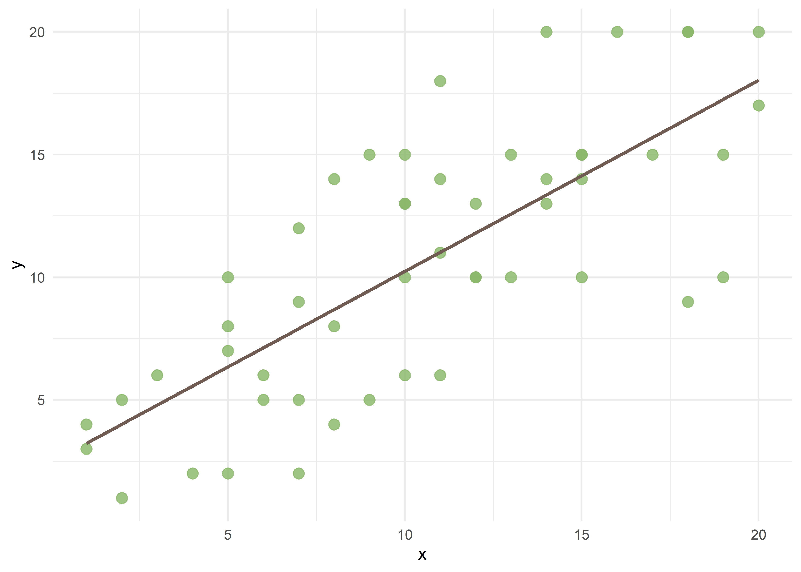
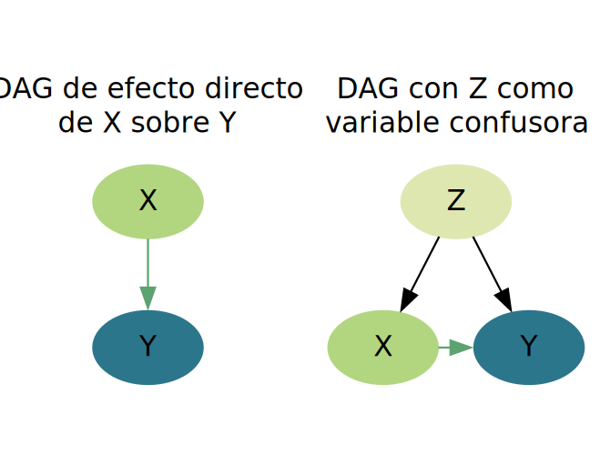
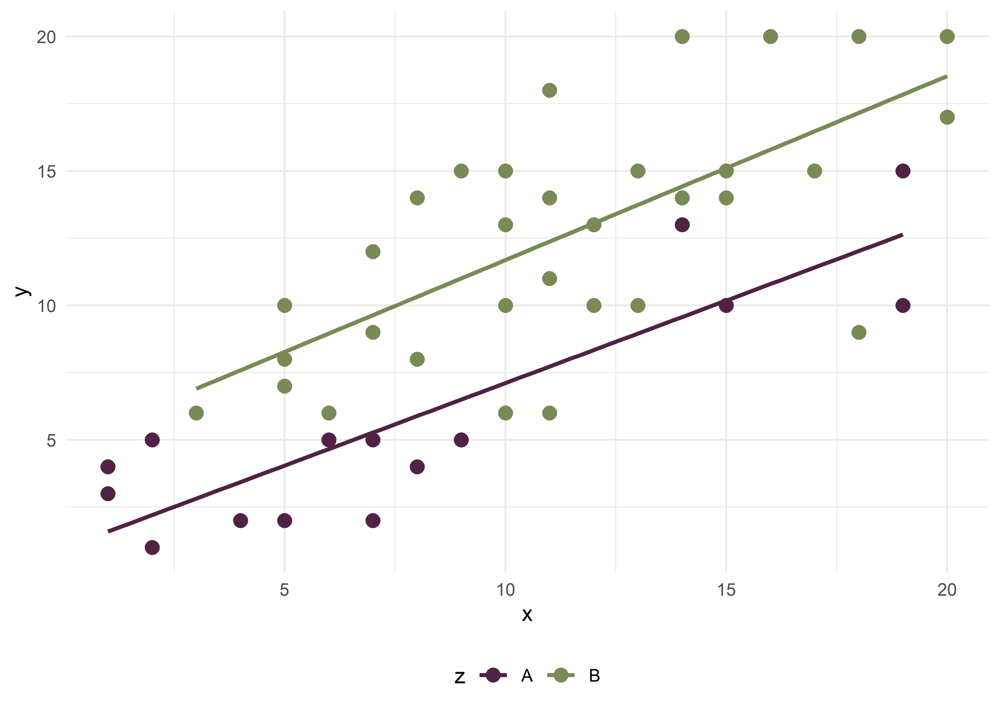
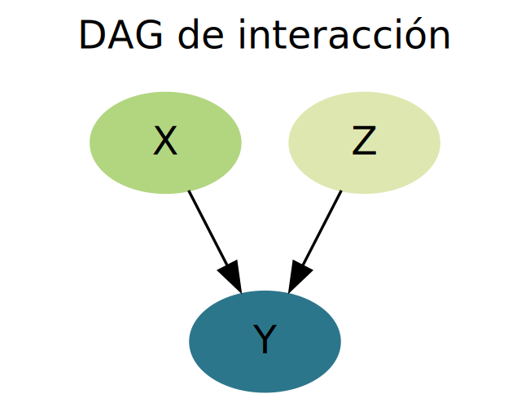
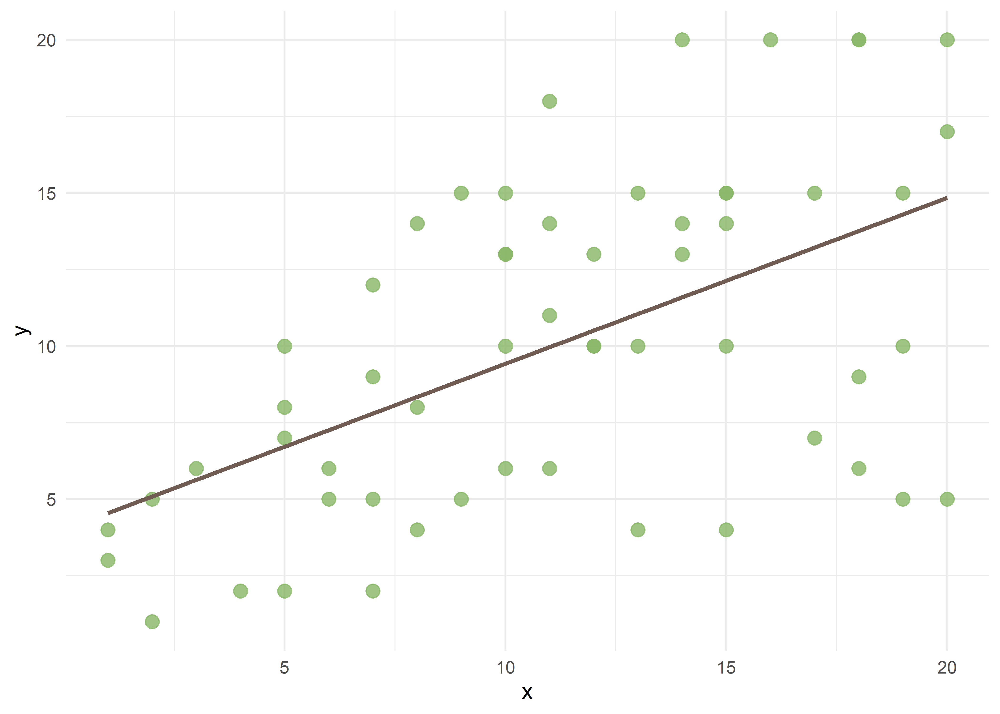

Confusión e interacción
Christian Ballejo ![]()
Introducción
Antes de comenzar a construir modelos de regresión lineal múltiple, es necesario repasar algunos conceptos fundamentales…
Los estudios epidemiológicos suelen partir de modelos teóricos conocidos y vinculados con el problema de investigación. Las variables recolectadas se definen en la etapa de diseño del estudio, cada una cumpliendo un rol específico. Generalmente, se identifican dos variables principales y excluyentes: la exposición (variable independiente) y el resultado (variable dependiente). Una vez seleccionadas la variable dependiente e independiente, aas demás variables medidas o no medidas en el estudio se denominan covariables.
Dentro del proceso salud-enfermedad, las covariables pueden asumir diversos roles, como confusoras, mediadoras de efecto, intermedias, colisionadoras, exposiciones en competencia, entre otros. Algunos de estos roles suelen estar definidos previamente por la literatura; otros pueden surgir o ser identificados durante el análisis.
Confusión
Una variable de confusión distorsiona la medida de asociación entre las variables principales del estudio. En presencia de confusión, pueden observarse los siguientes escenarios:
Asociación espuria: Efecto observado donde en realidad no existe.
Confusión positiva: Exageración o atenuación de una asociación real.
Confusión negativa: Inversión del sentido de una asociación real.
Según Gordis (2017), en un estudio que evalúa si la exposición (\(X\)) causa un resultado (\(Y\)), se dice que un tercer factor (\(Z\)) es una variable de confusión si cumple con los siguientes criterios:
\(Z\) es un factor de riesgo conocido para \(Y\).
\(Z\) está asociado con la exposición \(X\), pero no es un resultado de \(X\).
Para conceptualizar este y otros mecanismos, es útil utilizar gráficos acíclicos dirigidos (DAGs, por sus siglas en inglés). Estos diagramas representan las relaciones causales sin formar ciclos cerrados y conectan variables mediante flechas dirigidas.

Para quienes necesiten profundizar, se recomienda leer el artículo:
➡️ De Irala, J., et al. (2001). ¿Qué es una variable de confusión? Medicina Clínica, 117(10), 377–385. https://doi.org/10.1016/S0025-7753(01)72121-5
Manejo de la confusión
Dentro de las estrategias para manejar la confusión, podemos pensar en dos momentos:
- A la hora de diseñar y llevar a cabo el estudio:
- Emparejamiento individual.
- Emparejamiento de grupo.
- Al momento de analizar los datos:
- Estratificación.
- Ajuste estadístico.
El ajuste estadístico, característico de los análisis multivariados, permite estimar el efecto específico de cada variable independiente sobre la dependiente, controlando por las demás variables.
Un criterio comúnmente aceptado es que un factor se considera confusor si su ajuste provoca un cambio de al menos el 10% en la magnitud de la asociación. Por ejemplo, edad y sexo son variables frecuentemente confusoras en estudios epidemiológicos y generalmente son pocos los trabajos que no presentan datos ajustados por estas covariables..
En este curso utilizaremos la regresión lineal múltiple y los modelos lineales generalizados para manejar la confusión, ajustando por múltiples covariables. A continuación, se ejemplifica gráficamente con un diagrama de dispersión.
La recta de regresión muestra una correlación positiva entre los valores de las variables, \(X\) e \(Y\), con una ecuación de la forma:
\[ \hat{y} = \beta_0 + \beta_1x_1 + \epsilon \]La salida en R de este modelo se vería de la siguiente forma:
Call:
lm(formula = y ~ x, data = datos_conf)
Residuals:
Min 1Q Median 3Q Max
-7.4701 -2.4124 -0.0179 2.5926 6.9821
Coefficients:
Estimate Std. Error t value Pr(>|t|)
(Intercept) 2.45017 1.13262 2.163 0.0354 *
x 0.77889 0.09642 8.078 1.45e-10 ***
---
Signif. codes: 0 '***' 0.001 '**' 0.01 '*' 0.05 '.' 0.1 ' ' 1
Residual standard error: 3.559 on 49 degrees of freedom
Multiple R-squared: 0.5712, Adjusted R-squared: 0.5624
F-statistic: 65.26 on 1 and 49 DF, p-value: 1.45e-10El intercepto (\(\beta_0\)) es 2.45 y la pendiente (\(\beta_1\)) es 0.78, explicando el 56% de la variabilidad de \(Y\) (\(R^2\) = 0.56). En la ecuación podemos representarlo como:
\[ \hat{y} = 2.45 + 0.78x_1 + \epsilon \]
Ahora incorporemos la covariable \(Z\), con categorías A y B, que sospechamos tiene un rol de confusión en el modelo teórico.

El gráfico de dispersión muestra que hay una diferencia entre las rectas de regresión que se mantiene prácticamente constante (paralelas) en todo su desarrollo. Esa distancia medida en valores de \(Y\) es \(\beta_2\):
\[ \hat{y} = \beta_0 + \beta_1x_1 + \beta_2x_2 + \epsilon \]
Visto en resultados de consola:
Call:
lm(formula = y ~ x + z, data = datos_conf)
Residuals:
Min 1Q Median 3Q Max
-7.958 -1.502 -0.225 1.840 5.652
Coefficients:
Estimate Std. Error t value Pr(>|t|)
(Intercept) 0.65684 1.00484 0.654 0.516
x 0.65260 0.08372 7.795 4.49e-10 ***
zB 4.55436 0.93258 4.884 1.20e-05 ***
---
Signif. codes: 0 '***' 0.001 '**' 0.01 '*' 0.05 '.' 0.1 ' ' 1
Residual standard error: 2.939 on 48 degrees of freedom
Multiple R-squared: 0.7135, Adjusted R-squared: 0.7016
F-statistic: 59.77 on 2 and 48 DF, p-value: 9.347e-14El coeficiente \(\beta_1\) de la variable independiente principal (\(X\)) varió al incorporar la nueva variable (\(Z\)), pasando de 0,78 (cruda) a 0,65 (ajustada), es decir que disminuyó casi un 20%. A la vez, la covariable tiene una relación significativa con la variable dependiente (\(Y\)) y el modelo aumenta el \(R^2\) ajustado a 0,70.
Entonces podemos ver que la regresión multiple ajustó el efecto de \(X\) sobre \(Y\), teniendo en cuenta el efecto confusor de \(Z\) que sospechabamos. El valor de \(Y\) ahora es 0,66 (\(\beta_0\)) + 0,65* el valor de x (\(\beta_1*x\)) mientras \(Z\) es igual al nivel de referencia A, en cambio \(Y\) vale 0,66 (\(\beta_0\)) + 0,65* el valor de \(X\) (\(\beta_1*x\)) + 4,55 (\(\beta_2\)) cuando \(Z\) es igual a B.
Interacción o modificación de efecto
MacMahon (1972) definió la interacción de la siguiente manera:
“Cuando la incidencia de la enfermedad en presencia de dos o más factores de riesgo difiere de la incidencia que sería previsible por sus efectos individuales”
Esto puede manifestarse como:
Sinergismo (interacción positiva): El efecto combinado es mayor que la suma de sus efectos individuales.
Antagonismo (interacción negativa): El efecto combinado es menor.
La modificación del efecto ocurre cuando la magnitud de la asociación entre la exposición (\(X\)) y el resultado (\(Y\)) varía según los niveles de una tercera variable (\(Z\)).

Para quienes tengan interés en profundizar el tema, pueden leer el artículo:
➡️ De Irala, J., et al. (2001). ¿Qué es una variable modificadora del efecto? Medicina Clínica, 117(8), 297–302. https://doi.org/10.1016/S0025-7753(01)72092-1
Para identificar la interacción en regresión lineal múltiple, se incluyen términos de interacción (\(X * Z\)), que representan una nueva variable con efectos multiplicativos. El término de interacción implica el exceso de la variabilidad de los datos que no puede ser explicada por la suma de las variables consideradas.
En cursos anteriores de Epidemiología se estudió que, frente a un modificador de efecto (ME) lo más adecuado era presentar las medidas de asociación según los estratos formados por las categorías de la variable ME (no estimar una medida ajustada para ambos estratos, como se hace en caso de variables confusoras).
Un ejemplo similar al recién mostrado para la confusión, pero para la interacción podría ser:

\[\hat{y} = \beta_0 + \beta_1x_1 + \epsilon\]
Partimos de esta relación entre \(X\) e \(Y\) representada por la recta de la ecuación con los valores de la siguiente tabla:
Call:
lm(formula = y ~ x, data = datos_int)
Residuals:
Min 1Q Median 3Q Max
-9.8410 -3.8804 0.3709 3.2871 8.4102
Coefficients:
Estimate Std. Error t value Pr(>|t|)
(Intercept) 4.0035 1.4065 2.847 0.0062 **
x 0.5419 0.1132 4.789 1.31e-05 ***
---
Signif. codes: 0 '***' 0.001 '**' 0.01 '*' 0.05 '.' 0.1 ' ' 1
Residual standard error: 4.554 on 55 degrees of freedom
Multiple R-squared: 0.2943, Adjusted R-squared: 0.2814
F-statistic: 22.93 on 1 and 55 DF, p-value: 1.307e-05El intercepto (\(\beta_0\)) es de 4,0 y el coeficiente \(\beta_1\) (pendiente) significativo de 0,54.
Ahora incorporemos la covariable \(Z\), con categorías A y B, que sospechamos tiene un rol de interacción.
El gráfico de dispersión muestra que hay una diferencia entre las rectas de regresión que tienen distintas pendientes según el valor de \(X\). Esa diferencia no es aditiva y pasa a ser multiplicativa y da lugar a la ecuación:
\[\hat{y} = \beta_0 + \beta_1x_1 + \beta_2x_2 + \beta_3x_1x_2 + \epsilon\]
Visto en resultados de consola:
Call:
lm(formula = y ~ x * z, data = datos_int)
Residuals:
Min 1Q Median 3Q Max
-4.1427 -1.8739 -0.4598 1.3199 5.2230
Coefficients:
Estimate Std. Error t value Pr(>|t|)
(Intercept) 2.77269 0.91587 3.027 0.003804 **
x 0.22708 0.07719 2.942 0.004830 **
zB 2.49329 1.51850 1.642 0.106522
x:zB 0.45574 0.12213 3.732 0.000465 ***
---
Signif. codes: 0 '***' 0.001 '**' 0.01 '*' 0.05 '.' 0.1 ' ' 1
Residual standard error: 2.364 on 53 degrees of freedom
Multiple R-squared: 0.8168, Adjusted R-squared: 0.8064
F-statistic: 78.75 on 3 and 53 DF, p-value: < 2.2e-16El término de interacción es significativo, aunque la variable \(Z\) por sí misma no lo sea, lo que implica que la significancia se encuentra asociada específicamente a uno de los niveles de \(Z\) (en este caso, la categoría B). Dado que no es posible separar los niveles de \(Z\), esta variable debe permanecer en el modelo. Además, la inclusión del término de interacción mejora el \(R^2\) ajustado del modelo, que pasa de 0,28 a 0,80. Esto demuestra que, cuando la interacción es significativa, la significancia estadística de los efectos simples de las variables \(X\) y \(Z\) se vuelve menos relevante.
El modelo ajustado para \(Y\) es el siguiente:
- Para \(Z = A\):
\[ y = 2,77 + 0,23 x \]
- Para \(Z = B\):
\[ 2,77 + 0,23x + 2,49 + 0,46x \]
Esto muestra una interacción sinérgica entre la categoría B de la variable \(Z\) y la variable \(X\), reflejada en el efecto sobre \(Y\). La pendiente de la recta para \(Z = B\) es mayor que para \(Z = A\), lo que indica que el efecto de \(X\) sobre \(Y\) varía según el nivel de \(Z\).
Limitaciones de los términos de interacción
Aunque el análisis de interacción en modelos lineales generales es una herramienta útil para explorar relaciones complejas entre variables, es importante ser consciente de sus limitaciones y asumirlas en el diseño, análisis e interpretación de los resultados. Entre ellas encontramos:
Linealidad y Simplicidad del Modelo: El modelo lineal general asume relaciones lineales entre las variables, pero las interacciones a veces no muestran linealidad.
Sobreajuste en Modelos con Múltiples Interacciones: La inclusión de muchos términos de interacción, puede sobreajustar el modelo y dificultar su interpretación y generalización.
Colinealidad: La colinealidad entre las variables independientes puede ser exacerbada al incluir términos de interacción, lo que dificultaría la identificación de relaciones significativas.
Pérdida de Potencia Estadística: Al incluir términos de interacción, el número de parámetros a estimar aumenta, reduciendo los grados de libertad y pudiendo disminuir la potencia estadística.
Dificultades en la Interpretación: Los coeficientes de interacción pueden ser difíciles de interpretar, especialmente cuando las variables son continuas.
Heterogeneidad de Efectos: Los términos de interacción pueden no capturar variaciones en los efectos entre subgrupos específicos.
Errores de Especificación del Modelo: Si las interacciones relevantes no se incluyen o se modelan incorrectamente, el modelo puede estar mal especificado.
Sensibilidad a la Codificación de las Variables: La codificación de variables categóricas puede influir en la interpretación de los coeficientes de interacción.
Limitaciones Computacionales: En grandes conjuntos de datos o modelos complejos, la inclusión de múltiples interacciones puede aumentar significativamente la carga computacional y los recursos necesarios.
Referencias
Gordis, Leon. 2017. Epidemiologia. Thieme Revinter Publicações LTDA.
MacMahon, B. 1972. «Concepts of multiple factors». Multiple factors in the causation of environmentally induced disease. Academic Press, New York.